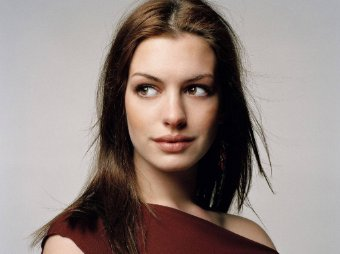
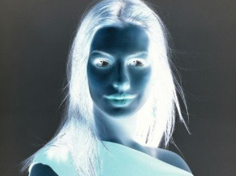
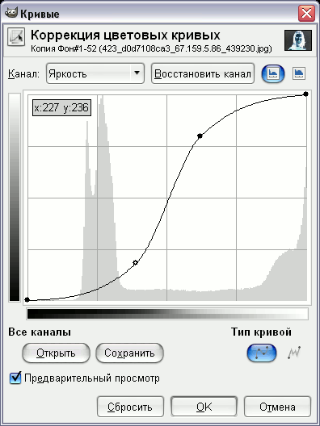
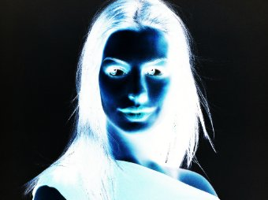
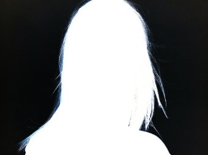
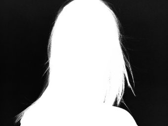
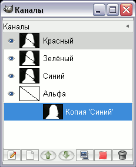
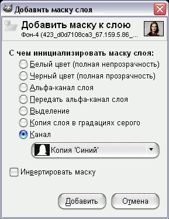
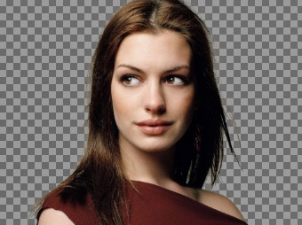
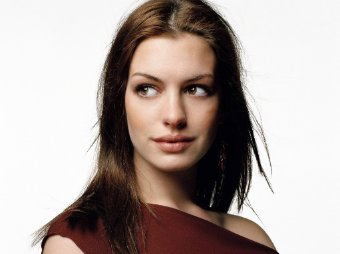

Откройте любую картину, из фона которой вы хотите извлечь человека.

Продублируем слой с фотографией. Инвертируем цвета «Цвет - Инвертировать».

Теперь требуется зайти в меню «Цвет – Кривые» и выставить примерно такие значения на канале яркости:

Получится контрастная картинка:

Теперь у нас получилось, что волосы стали светлыми, а фон – почти черным. Теперь нам надо закрасить белым цветом всю остальную область девушки, а черным – все вокруг девушки. Для этого лучше создать новый слой. В результате закрашивания должно получиться примерно следующее:

Следующим шагом надо свести два верхних слоя. Потом нужно их обесцветить («Цвет - Обесцветить») любым способом.

Для того чтобы создать маску слоя, нужно зайти во вкладку каналов и сделать копию любого канала. Убедитесь, что все каналы кроме копии включены, напротив каждого из них должна быть пиктограмма глаза.

Теперь нужно перейти во вкладку слоев и с помощью пиктограммы глаза выключить видимость черно-белого слоя. Сделайте активным слой с фоновым изображением, нажмите на нем правой кнопкой мыши и выберите «Добавить маску слоя». В открывшемся диалоговом окне установите параметры как на рисунке ниже.

В результате, фон фотографии должен стать прозрачным. Если фон прозрачный не до нужной степени, то его можно сделать прозрачней, покрасив маску слоя кистью с черным цветом переднего плана.

Можно добавить еще один слой с белым фоном:
